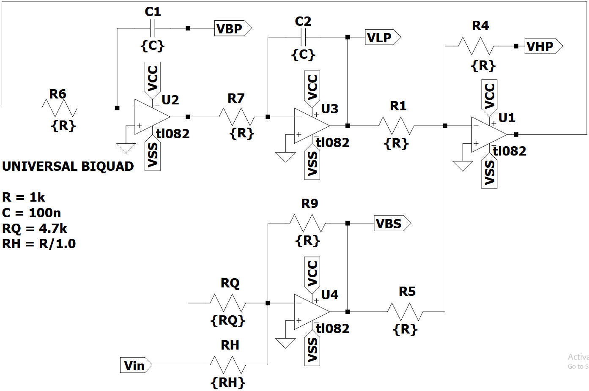
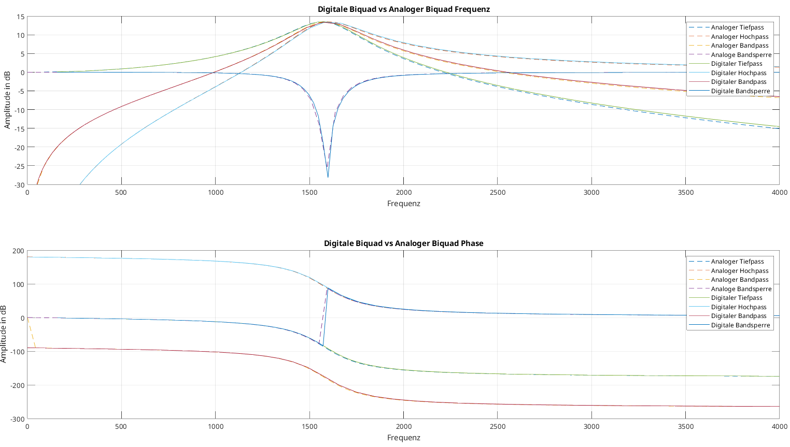
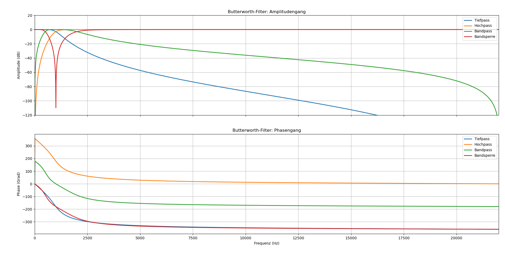
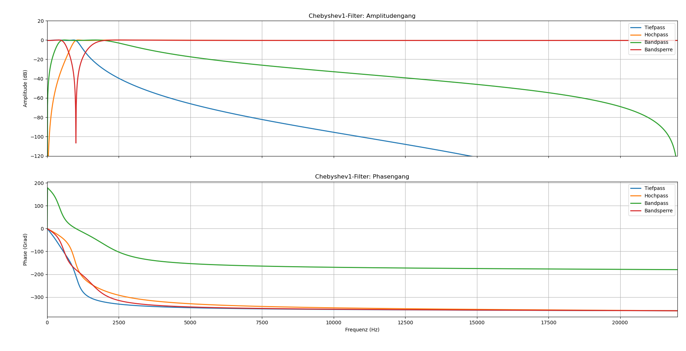
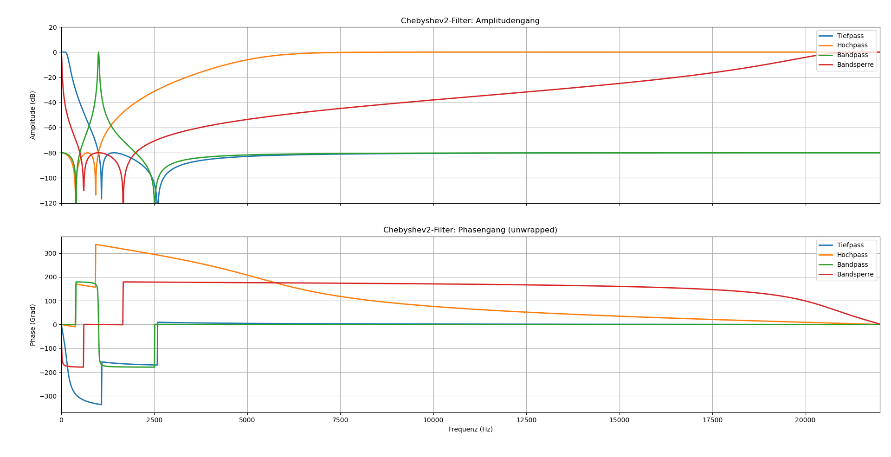
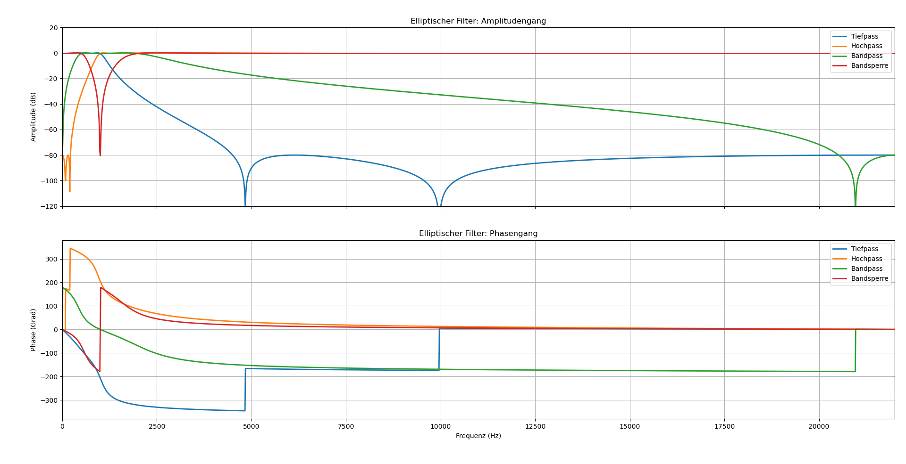

3 Lerndemonstration zur Implementierung von digitalen Filtern auf Mikrocontrollern
![]()
4 Praktische Anwendung der Bilinear-Transformation
Die analogen Biquad Filter für die Anwendung der Bilineartransformation werden aus dem Experiment 4 des Analog Systems Lab Kit PRO entnommen.
4.1 Übertragungsfunktionen der analogen Biquad Filter
Tiefpass: \(H_{TP}(s) = \frac{V_3}{V_i} = \frac{+H_0}{1 + \frac{s}{w_0Q} + \frac{s^2}{w_0^2}} = \frac{+H_0 \cdot w_0^2}{w_0^2 + \frac{sw_0}{Q} + s^2}\)
Hochpass: \(H_{HP}(s) = \frac{V_1}{V_i} = \frac{H_0 \cdot \frac{s^2}{w_0^2}}{1 + \frac{s}{w_0Q} + \frac{s^2}{w_0^2}} = \frac{+H_0 \cdot s^2}{w_0^2 + \frac{sw_0}{Q} + s^2}\)
Bandpass: \(H_{BP}(s) = \frac{V_2}{V_i} = \frac{-H_0 \cdot \frac{s}{w_0}}{1 + \frac{s}{w_0Q} + \frac{s^2}{w_0^2}} = \frac{-H_0 \cdot sw_0}{w_0^2 + \frac{sw_0}{Q} + s^2}\)
Bandsperre: \(H_{BS}(s) = \frac{V_4}{V_i} = \frac{(1 + \frac{s^2}{w_0^2 \cdot}) \cdot H_0}{1 + \frac{s}{w_0Q} + \frac{s^2}{w_0^2}} = \frac{(w_0^2 + s^2) \cdot H_0}{w_0^2 + \frac{sw_0}{Q} + s^2}\)
4.2 Analoge Filterschaltung

Um diese analogen Filter Bilinear zu transformieren stehen MATLAB sowie Python zur Verfügung, um die Durchführung der Substitutionen durchzuführen.
4.3 Python
Python mit scipy.signal
numz, denz = bilinear(nums ,dens ,fs = fs)import numpy as np
import matplotlib.pyplot as plt
from scipy.signal import freqs, bilinear, freqzFür die Bilinear-Transformation wird die Scipy-Bibliothek mit dem Signal-Modul verwendet. Aus diesem Modul werden die Funktionen freqs, bilinear und freqz importiert. Für weitere Berechnungen wird Numpy als np importiert und für die Möglichkeit zum Plotten wird Matplotlib.pyplot als plt importiert.
R = 1000
C = 100e-9
w0 = 1 / (R * C)
Q = 4.7
fs = 44100Aus dem Schaltbild der analogen Filterschaltung werden dessen Parameter entnommen. Die Kreisfrequenz \(w_0\) berechnet sich durch \(w_0 = \frac{1}{R C}\). Der Wert \(H_0\) beschreibt den Gainfaktor der Filterschaltungen und wird auf 1 gesetzt, wodurch dieser nicht mehr im Code aufkommt. Die digitalen Filter sollen für Audioanwendungen verwendet werden, weshalb die Wahl von 44,1 kHz als Abtastfrequenz getroffen wurde. Durch die Wahl der Abtastefrequenz von 44,1 kHz wird kein Prewarping benötigt, da die Frequenzverzerrung vernachlässigbar ist.
# Tiefpass Zähler
TP_nums = [0, 0, w0**2]
# Hochpass Zähler
HP_nums = [1, 0, 0]
# Bandpass Zähler
BP_nums = [0, -w0, 0]
# Bandstop Zähler
BS_nums = [1, 0, w0**2]
# Nenner
dens = [1, w0/Q, w0**2]Die Zähler und Nenner der Übertragungsfunktionen der analogen Filter werden als Listen übernommen. Die Listenelemente entsprechen den Koeffizienten in absteigender Potenzordnung: \([s^2, s^1, s^0]\). Die Nenner der vier Filter sind identisch und müssen nur einmal übernommen werden.
# Bilineartransformation
# Tiefpass
TP_numz, TP_denz = bilinear(TP_nums, dens, fs = fs)
# Hochpass
HP_numz, HP_denz = bilinear(HP_nums, dens, fs = fs)
# Bandpass
BP_numz, BP_denz = bilinear(BP_nums, dens, fs = fs)
# Bandstop
BS_numz, BS_denz = bilinear(BS_nums, dens, fs = fs)Die Bilineartransformation wird durch bilinear durchgeführt, indem dieser Funktion die Zähler- und Nennerlisten der jeweiligen Filter mit der Abtastfrequenzen \(f_s\) übergeben werden. Die Funktion liefert die Zähler- und Nennerkoeffizienten der digitalen Übertragungsfunktion.

5 Filterentwurf in Python
Für den Entwurf von digitalen IIR-Filtern wird in Python die Scipy-Bibliothek mit dem Signal-Modul verwendet. Diese Bibliothek bietet über eine umfassende Sammlung von Funktionen für den Entwurf und die Analyse von digitalen Filtern. Für den Entwurf von digitalen Biquad-Filtern wird das Entwurfsverfahren mit analogem Prototyping durchgeführt.
from scipy.signal import butter, cheby1, cheby2, ellipDas Entwurfsverfahren basiert auf der Transformation analoger Filterprototypen, bei welchem ein analoger Filter mit den gewünschten Eigenschaften entworfen wird und anschließend durch die Bilineartransformation mit Prewarping in den digitalen Bereich überführt wird.
Zur beispielhaften Nutzung der Funktionen werden die vier Grundfiltertypen nach den folgenden Parametern entworfen:
# Ordnung für Tief- und Hochpass
order = 4
# Ordnung für Bandpass und Bandsperre
order_b = 2Zur Demonstration werden Filter vierter Ordnung entworfen, um die Unterschiede zwischen der Filterprotypen zu verdeutlichen.
Für den Entwurf von biquadratischen Tief- und Hochpass-Filter wird die Ordnung auf den Wert 2 gesetzt. Bei Bandpass und Bandsperr-Filtern muss die Ordnung auf 1 gesetzt werden, um einen biquadratischer Filter zu erhalten.
Beim Entwurf von Bandpass- und Bandsperr-Filtern wird eine Frequenztransformation eines Tiefpass-Prototyps durchgeführt, bei welcher jede s-Variable quadriert wird, wodurch sich die Filterordnung automatisch verdoppelt.
# Abtastrate für Audioanwendungen in Hz - Standard für CD-Qualität
fs = 44100# Grenzfrequenz für Tief- und Hochpass in Hz
fc = 1000
# Normalisierte Grenzfrequenz
wn = fc/(fs/2)# Untere und obere Grenzen für Bandpass und Bandsperre in Hz
low = 500
high = 2000
# Normalisierte untere und obere Grenzen
wn_b = [low/(fs/2), high/(fs/2)]# Welligkeit(Ripple) im Durchlassbereich in dB
rp = 0.5
# Dämpfung im Sperrbereich in dB
rs = 80Über die Funtkionen butter, cheby1, cheby2 und ellip werden die dementsprechenden Filter enworfen. Über den Parameter btype wird entschieden, welcher Filtertyp entworfen wird durchs Einsetzen von low, high, bandpassund bandstop.
Die Koeffizienten können als separate b und a Arrays oder als eine Second Order System (SOS)-Matrix durch output = 'sos' ausgegeben werden. Mit der SOS-Matrix bietet sich die Möglichkeit auch Filter höherer Ordnung, als kaskadierte Biquad-Sektionen zu realisieren. Für den Entwurf von digitalen Filtern wird beim Parameter analog = False gesetzt.
Mit dem Parameter rp lässt sich die Welligkeit (Ripple) im Durchlassbereich von Chebyshev1- und Elliptischen Filtern kontrollieren und mit dem Parameter rs die Dämpfung im Sperrbereich von Chebyshev2- und Elliptischen Filtern.
Butterworth-Filter
Der Butterwoth-Filter zeichnet sich aus mit seiner maximalen Flachheit im Durchlassbereich ohne Welligkeit aus. Als Kompromiss weist dieser einen relativ langsamen Übergang vom Durchlass- zum Sperrbereich auf. Er bietet ein ausgewogenes Verhältnis zwischen Phasenverhalten und Flankensteilheit.
b, a = butter(N = order, Wn = wn, btype = 'low', analog = False)
b, a = butter(N = order, Wn = wn, btype = 'high', analog = False)
sos = butter(N = order_b, Wn = wn_b, btype = 'bandpass',
analog = False, output = 'sos')
sos = butter(N = order_b, Wn = wn_b, btype = 'bandstop',
analog = False, output = 'sos')
Chebyshev Typ 1-Filter
Der Chebyshev Typ 1-Filter weist Welligkeit im Durchlassbereich auf, ermöglicht jedoch einen steileren Übergang im Vergleich zum Butterworth-Filter. Die Wellikgkeit ist gleichmäßig über den gesamten Durchlassbereich verteilt.
b, a = cheby1(N = order, rp = rp,Wn = wn, btype = 'low', analog = False)
b, a = cheby1(N = order, rp = rp, Wn = wn, btype = 'high', analog = False)
sos = cheby1(N = order_b, rp = rp, Wn = wn_b, btype = 'bandpass',
analog = False, output = 'sos')
sos = cheby1(N = order_b, rp = rp, Wn = wn_b, btype = 'bandstop',
analog = False, output = 'sos')
Chebyshev Typ 2-Filter
Der Chebyshev Typ 2-Filter kombiniert einen flachen Durchlassbereich, vergleichbar mit dem Butterworth-Filter, mit Welligkeit im Sperrbereich. Bei gleichmäßiger Sperrbereichsdämpfung ermöglicht dieser steile Übergangsflanken.
b, a = cheby2(N = order, rs = rs,Wn = wn, btype = 'low', analog = False)
b, a = cheby2(N = order, rs = rs, Wn = wn, btype = 'high', analog = False)
sos = cheby2(N = order_b, rs = rs, Wn = wn_b, btype = 'bandpass',
analog = False, output = 'sos')
sos = cheby2(N = order_b, rs = rs, Wn = wn_b, btype = 'bandstop',
analog = False, output = 'sos')
Elliptischer Filter (Cauer)
Der elliptische Filter bietet die steilsten Übergangsflanken aller dargestellten Filtertypen, weist jedoch Welligkeiten sowohl im Durchlass- als auch im Sperrbereich auf. Dieser eignet sich Optimal für Anwendungen mit strengen Anforderungen an die Übergangsanforderungen.
b, a = ellip(N = order, rp = rp, rs = rs,Wn = wn, btype = 'low', analog = False)
b, a = ellip(N = order, rp = rp, rs = rs, Wn = wn, btype = 'high', analog = False)
sos = ellip(N = order_b, rp = rp, rs = rs, Wn = wn_b, btype = 'bandpass',
analog = False, output = 'sos')
sos = ellip(N = order_b, rp = rp, rs = rs, Wn = wn_b, btype = 'bandstop',
analog = False, output = 'sos')
Das Notebook filter_desing.ipynb ermöglicht eine Vergleichsanalyse der verschiedenen Entwurfsmethoden unter indentischen Parametern und bietet eine Basis für die Filterauswahl basierend auf den spezifischen Anwendungsanforderungen.
6 Implementierungserklärung der Biquad Filter in Arduino
Für die Implementierung der biquadratischen Filter in Arduino werden die Differenzengleichungen aus den Theoretischen Grundlagen entnommen und in Code umgesetzt. Die Filter sollen über das Einsetzten der b und a Koeffizienten implementiert werden.
6.1 Filter Basisklasse
class Filter
{
public:
virtual ~Filter() {}
virtual float filter(float) = 0;
};Diese abstrakte Basisklasse dient als Interface für alle Filterimplementierungsstrukturen. Der virtuelle Destruktor virtual ~Filter() {} stellt sicher, dass beim Löschen eines Objekts über einen Basisklassenzeiger der korrekte Destruktor der abgeleiteten Klasse aufgerufen wird. Die rein virtelle Methode virtual float filter(float) = 0; definiert die einheitliche Schnittstelle - jede abgeleitete Filterklasse muss eine filter() - Methode implementieren, die einen float-Wert entgegennimmt und einen gefilterten float-Wert zurückgibt. Diese Struktur ermöglicht die Verwendung der verschiedenen Filtertypen im Anwendiungsfall einer Kaskadierung.
6.2 Direktform 1
6.2.1 Private Member-Variablen
private:
const float b_0;
const float b_1;
const float b_2;
const float a_1;
const float a_2;
float x_1 = 0;
float y_1 = 0;
float y_2 = 0;Die Filterkoeffizienten b_0, b_1, b_2, a_1, a_2 sind als const deklariert, da sie nach der Initialisierung unveränderlich bleiben sollen. Dies entspricht der mathematischen Definition eines zeitinvarianten Systems. Die Verzögerungselemente x_1, y_1, y_2 speichern die vorherigen Ein- und Ausgangswerte. Der Wert a_0 wird nicht gespeichert, da durch die Normalisierung im Konstruktor alle Koeffizienten bereits durch a_0 geteilt wurden.
6.2.2 Konstruktor
BiquadFilterDF1(const float (&b)[3], const float (&a)[3], float gain)
: b_0(gain * b[0] / a[0]),
b_1(gain * b[1] / a[0]),
b_2(gain * b[2] / a[0]),
a_1(a[1] / a[0]),
a_2(a[2] / a[0])
{
}Der Konstruktor verwendet Initialisierungslisten für optimale Performance. Die Koeffizienten werden direkt bei der Objekterstellung normalisiert, indem alle durch a[0] geteilt werden. Dies entspricht der Standardform der Differenzengleichung, wo der führende Koeffizient des Nenners auf 1 normiert wird. Der gain Parameter wird in die Zählerkoeffizienten eingerechnet, was mathematisch äquivalent zur Multiplikation der gesamten Übertragungsfunktion mit dem Verstärkungsfaktor ist. Die Array-Referenz-Syntax const float (&b)[3] stellt sicher, dass exakt drei Elemente übergeben werden müssen.
6.2.3 Filter Methode
float filter(float x_0)
{
float x_2 = x_1;
x_1 = x_0;
float y_0 = b_0 * x_0 + b_1 * x_1 + b_2 * x_2 - a_1 * y_1 - a_2 * y_2;
y_2 = y_1;
y_1 = y_0;
return y_0;
} Diese Implementierung wird durch die Struktur der DF1 umgesetzt. Zuerst werden die Eingangsverzögerungen aktualiseirt: x_2 erhält den vorherigen Wert von x_1, dann wird x_1 auf den aktuellen Eingangswert x_0 gesetzt. Die Differenzengleichung wird direkt implementiert: y[n] = b_0 * x[n] + b_1 * x[n-1] + b_2 * x[n-2] - a_1 * y[n-1] - a_2 * y[n-2]. Im Anschluss werden die Ausgangsverzögerungen für die nächste Iteration aktualisiert. Diese Reihenfolge ist kritisch, da die Berechnung vor Aktualisierung der Ausgangsverzögerungen erfolgen muss.
6.3 Direktform 2
6.3.1 Private Member Variablen
private:
const float b_0;
const float b_1;
const float b_2;
const float a_1;
const float a_2;
float w_0 = 0;
float w_1 = 0;Die DF2-Struktur benötigt nur zwei Verzögerungselemente w_0, w_1 anstatt der vier in DF1. Dies reduziert den Speicherbedarf um die 50%. Die w Variablen repräsentieren die internen Knotenpunkte der DF2-Struktur, wo sowohl die Rückkopplung als auch die Vorwärtskopplung zusammenlaufen.
6.3.2 Konstruktor
BiquadFilterDF2(const float (&b)[3], const float (&a)[3], float gain)
: b_0(gain * b[0] / a[0]),
b_1(gain * b[1] / a[0]),
b_2(gain * b[2] / a[0]),
a_1(a[1] / a[0]),
a_2(a[2] / a[0])
{
}Der Konstruktor ist identisch zur DF1 Implementierung, da die Koeffizientennormalisierung unabhängig von der internen Filterstruktur ist. Die mathematische Übertragungsfunktion bleibt dieselbe, nur die interne Realisierung unterscheidet sich
6.3.3 Filter Methode
float filter(float x_0)
{
float w_2 = w_1;
w_1 = w_0;
w_0 = x_0 - a_1 * w_1 - a_2 * w_2;
float y_0 = b_0 * w_0 + b_1 * w_1 + b_2 * w_2;
return y_0;
} Die DF2 Implementierung teilt die Berechnung in zwei Phasen: Zuerst wird der interne Zustand w_0 berechnet, der das Eingangssignal minus der Rückkopplung darstellt. Dies entspricht der Implementierung des Nennerpols der Übertragungsfunktion. Dann wird der Ausgang durch die Vorwärtskopplung mit den b Koeffizienten berechnet, was dem Zählerpolynom entspricht. Die Verzögerungselemente werden vor der w_0 Berechnung aktualisiert, damit die korrekten vorherigen Werte verwendet werden.
6.4 Transponierte Direktfrom 2
6.4.1 Private Member Variablen
private:
const float b_0;
const float b_1;
const float b_2;
const float a_1;
const float a_2;
float s_1 = 0;
float s_2 = 0;Die TDF2 Struktur verwendet Zustandsvariablen s_1, s_2, die als “shift register” fungieren. Diese Struktur ist die transponierte Version der DF2, was bedeutet, dass der Signalfluss umgekehrt wird: die Ein- und Ausgänge werden vertauscht, sowohl als auch die Richtung der Verzögerungselemente wird umgekehrt.
6.4.2 Konstruktor
BiquadFilterTDF2(const float (&b)[3], const float (&a)[3], float gain)
: b_0(gain * b[0] / a[0]),
b_1(gain * b[1] / a[0]),
b_2(gain * b[2] / a[0]),
a_1(a[1] / a[0]),
a_2(a[2] / a[0])
{
}Auch hier ist der Konstruktor identisch zu den anderen Implementierungen, da die Koeffizientennormalisierung eine mathematische Anforderung ist, die unabhängig von der gewählten Realisierungsform gilt.
6.4.3 Filter Methode
float filter(float x_0)
{
float y_0 = s_1 + b_0 * x_0;
s_1 = s_2 + b_1 * x_0 - a_1 * y_0;
s_2 = b_2 * x_0 - a_2 * y_0;
return y_0;
} Bei der TDF2 Implementierung setzt sich der Ausgangswert aus der addition aus dem ersten Zustandsregister s_1 mit dem verstärkten Eingangswert. Die Zustandsregister werden dann für die nächste Iteration aktualisiert. s_1 wird zum nächsten Wert von s_2 addiert mit den gewichteten Ein- und Ausgangswerten. s_2 wird komplett neu berechnet. Diese Struktur hat den Vorteil, dass der Ausgangswert sehr früh im Berechnungszyklus verfügbar ist, was bei Pipeline Implementierungen sich als vorteilhaft erweisen kann.
6.5 Eingabe Koeffiziente
const float b_0 = f;
const float b_1 = f;
const float b_2 = f;
const float a_0 = f;
const float a_1 = f;
const float a_2 = f;Bei den Eingabe-Koeffezienten wird der f Suffix an die float Literalen angehängt, sodass sicher gestellt wird das die Werte als singel-precision floating-point interpretiert werden, was bei Arduino-System von hoher Wichtigkeit ist.
6.6 Koeffizienten Arrays und Filter Instanziierung
const float b_coefficients[] = { b_0, b_1, b_2};
const float a_coefficients[] = { a_0, a_1, a_2};
const float gain = 1;
BiquadFilterTDF2 biquad(b_coefficients, a_coefficients, gain);Die Koeffizienten werden in separaten Arrays gespeichert und an den Konstruktor übergeben. Dies ermöglicht eine saubere Trennung zwischen Filterdesign (Koeffizienten) und Implementierung (Filterklasse). Über den gain Paramter kann auf den zu Implementierenden Filter eine gewünschte Verstärkung angewandt werden. Bei einem Wert von 1 wird keine zusätzliche Verstärkung angewendet. Bei dieser Filter Instanziierung wird die TDF2 verwendet mir ihrem korosponierenden Klassennamen. Somit wird das Objekt biquad durch die Klasse BiquadFilterTDF2 instanziiert. Innerhalb des Objekts werden die Koeffizienten mit dem Verstärkungsfaktor an die jeweilige Filterklasse übergeben. Der Implementierte Filter steht bereit zur Verwendung.
6.7 Filter Anwendung
float filtered = biquad.filter(Input);Die direkte Anwendung erfolgt durch den Aufruf der filter()-Methode auf dem Filterobjekt biquad. Der Eingangswert Input wird der Methode übergeben, durch die spezifische Filterimplementierung entsprechend der definierten Differenzengleichung verarbeitet und als transformierter Ausgangswert filtered zurückgegeben.
7 Filterung einer WAV Datei in Arduino
Zur Demonstration von digitalen Filtern auf Mikrocontrollern wird eine WAV-Datei mittels eines ESP32 gefiltert. Die Audio-Datei wird über eine SD-Karte eingelesen, gefiltert und als gefilterte Variante abgespeichert.
Zu beachten ist, dass nur 16-Bit-WAV-Dateien unterstützt werden. Die Datei kann jedoch Mono oder Stereo mit und einer beliebigen Samplerate sein. Die WAV-Datei, die gefiltert werden soll, muss zu original.wav umbenannt werden bevor diese auf die SD-Karte übertragen wird.
7.1 Vorbereitung der WAV-Filterung
#include "SD_MMC.h" // SD-Karten-Support für ESP32 mit SD_MMC-AnschlussDurch die Einbindung vom SD_MMC.h wird eine erleichterte Nutzung von SD-Karten mit einem ESP32 geboten, als auch die Möglichkeit für 1-Wire-Modus sowie 4-Wire-Modus.
// --- WAV Hilfsfunktionen ---
uint32_t readLEUint32(uint8_t* buf) {
return (uint32_t)buf[0] | ((uint32_t)buf[1] << 8)
| ((uint32_t)buf[2] << 16) | ((uint32_t)buf[3] << 24);
}
uint16_t readLEUint16(uint8_t* buf) {
return (uint16_t)buf[0] | ((uint16_t)buf[1] << 8);
}Diese Hilfsfunktionen konvertieren Byte-Arrays aus WAV-Dateien in Ganzzahlen im Little-Edian-Format um. readLEUint32() kombiniert 4 Bytes zu einem 32-Bit-wert, readLEUint16() kombiniert 2 Bytes zu einem 16-Bit-Wert, wobei das niedrigste Byte zuerst kommt.
// WAV-Header für die Ausgabedatei schreiben
void writeWavHeader(File &file, uint32_t dataSize, uint16_t channels,
uint32_t sampleRate, uint16_t bitsPerSample) {
const char* riff = "RIFF";
const char* wave = "WAVE";
const char* fmt = "fmt ";
const char* data = "data";
uint32_t chunkSize = 36 + dataSize;
uint16_t blockAlign = channels * bitsPerSample / 8;
uint32_t byteRate = sampleRate * blockAlign;
uint32_t subchunk1Size = 16;
uint16_t audioFormat = 1; // PCM
file.seek(0);
file.write((const uint8_t*)riff, 4);
file.write((uint8_t*)&chunkSize, 4);
file.write((const uint8_t*)wave, 4);
file.write((const uint8_t*)fmt, 4);
file.write((uint8_t*)&subchunk1Size, 4);
file.write((uint8_t*)&audioFormat, 2);
file.write((uint8_t*)&channels, 2);
file.write((uint8_t*)&sampleRate, 4);
file.write((uint8_t*)&byteRate, 4);
file.write((uint8_t*)&blockAlign, 2);
file.write((uint8_t*)&bitsPerSample, 2);
file.write((const uint8_t*)data, 4);
file.write((uint8_t*)&dataSize, 4);
}Die writeWavHeader-Funktion schreibt einen WAV-Header in die Ausgabedatei. Die Funktion erstellt die erforderlichen Chunks (RIFF, WAVE, fmt, data) mit den übergebenen Audio-Parametern und berechnet automatisch die abgeleiteten Werte wie Byte-Rate und Block-Alignment. Der Header wird im Little-Endian-Format geschrieben.
// --- Variablen für die Ein- und Ausgangsdatei --
File wavFile; // Originale Eingangsdatei
File filteredFile; // Gefiltere AusgangsdateiHilfsvariablen für die originale Eingangsdatei als auch die gefilterte Ausgangsdatei.
Der Gesamtprozess bestehend aus einlesen, filtern und neuen WAV-Datei erstellen wird innerhalb der Setup()-Funktion durchgeführt.
void setup() {
Serial.begin(115200);Zunächst wird die serielle Kommunikation mit 115200 Baud initialisiert, um Informationen des Mikrocontroller in der Konsole auslesen zu können.
// SD-Karte im 4-Wire Modus initialisieren
if (!SD_MMC.begin("/sdcard", false)) { //false = 4-Wire, true - 1-Wire
Serial.println("Fehler beim Initialisieren der SD-Karte.");
return;
}
Serial.println("SD-Karte gefunden.");Die SD-Karte wird im 4-Wire-Modus initialisiert, welcher eine höhere Datenübertragungsrate ermöglicht als der 1-Wire-Modus. Durch den Parameter false wird der 4-Wire-Modus aktiviert, während true den 1-Wire-Modus aktiviert. Wird keine SD-Karte gefunden oder besteht ein Problem bei der Initialisierung, wird eine Fehlermeldung ausgegeben und das Programm beendet.
// Eingangs WAV Datei öffnen
wavFile = SD_MMC.open("/original.wav", FILE_READ);
if (!wavFile) {
Serial.println("Fehler beim Öffnen der WAV-Datei.");
return;
}
// WAV Header auslesen
if (!readWavHeader()) {
wavFile.close();
return;
}Die originale WAV-Datei wird im Lesemodus geöffnet. Für den Fall, dass das Öffnen fehlschlägt, wird dementsprechende Fehlermeldung ausgegeben und das Programm beendet. Bei erfolgreichen Öffnen wird die Funktion readWavHeader aufgerufen und der Header der Eingangsdatei analysiert. Falls diese Funktion false zurückgibt, wird die Datei geschlossen und das Programm beendet.
bool readWavHeader() {
uint8_t riffHeader[12];
if (wavFile.read(riffHeader, 12) != 12) {
Serial.println("Fehler beim Lesen des RIFF-Headers.");
return false;
}
//Prüfen auf "RIFF" und "WAVE"
if (memcmp(riffHeader, "RIFF", 4) != 0 || memcmp(&riffHeader[8],
"WAVE", 4) != 0) {
Serial.println("Keine gültige WAV-Datei.");
return false;
}Die Header-Analyse-Funkion beginnt mit der Validierung der WAV-Datei Signatur. Dazu werden die ersten 12 Bytes der Datei gelesen, die den RIFF-Header bilden. Anschließend wird überprüft, ob die Bytes 0-3 die Zeichenkette “RIFF” und die Bytes 8-11 die Zeichenkette “WAVE” enthalten. Diese Signaturen sind für alle gültigen WAV-Dateien notwendig und identifizieren das genaue Dateiformat.
// Variablen für WAV-Informationen
uint16_t audioFormat = 0, numChannels = 0, bitsPerSample = 0;
uint32_t sampleRate = 0, dataSize = 0;
bool fmtFound = false, dataFound = false;Für die Chunk-Analyse werden die folgenden Variablen initialisiert, welche die Audio-Parameter speichern. Die 16-Bit Variablen audioFormat, numChannels und bitsPerSample enthalten die grundlegenden Format-Informationen, während sampleRate und dataSize als 32-Bit-Werte die Abtastrate und Datengröße speichern. Die booleschen Flags fmtFound und dataFound verfolgen, die notwendigen Chunks bereits gefunden wurden.
// Suche nach "fmt " und "data" Chunks
while (wavFile.position() < wavFile.size()) {
uint8_t chunkHeader[8];
if (wavFile.read(chunkHeader, 8) != 8) {
Serial.println("Fehler beim Lesen eines Chunk-Headers.");
break;
}
uint32_t chunkSize = readLEUint32(&chunkHeader[4]);Der Chunk-Parser durchläuft systematisch die WAV-Datei, um relevante Datenabschnitte zu finden. Die WAV-Datei ist in Chunks unterteilt, die jeweils mit einem 8-Byte-Header beginnt: 4 Bytes für die Chunk-ID und 4 Bytes für die Größe im Little-Endian-Format. Die Schleife läuft bis zum Dateiende oder bis ein Lesefehler auftritt.
//Format-Chunk gefunden
if (memcmp(chunkHeader, "fmt ", 4) == 0) {
uint8_t fmtChunk[chunkSize];
if (wavFile.read(fmtChunk, chunkSize) != chunkSize) {
Serial.println("Fehler beim Lesen des fmt-Chunks.");
break;
}
audioFormat = readLEUint16(&fmtChunk[0]);
numChannels = readLEUint16(&fmtChunk[2]);
sampleRate = readLEUint32(&fmtChunk[4]);
bitsPerSample = readLEUint16(&fmtChunk[14]);
fmtFound = true;
// Parameter der Eingangs-WAV
Serial.printf("AudioFormat: %d\n", audioFormat);
Serial.printf("Kanäle: %d\n", numChannels);
Serial.printf("SampleRate: %d\n", sampleRate);
Serial.printf("Bits pro Sample: %d\n", bitsPerSample);
if (chunkSize % 2 == 1) wavFile.seek(wavFile.position() + 1);
}Wenn der Chunk-Header “fmt” gefunden wird, werden die Chunk-Daten in einen Puffer geladen und die wichtigsten Audio-Parameter extrahiert: Audi-Format(PCM), Kanalzahl(Mono oder Stereo), Samplerate und die Bits pro Sample aus festen Byte-Positionen. Die Parameter werden zur Kontrolle ausgegeben und bei ungerader Chunk-Größe wird ein Padding-Byte übersprungen.
// Daten-Chunk gefunden
else if (memcmp(chunkHeader, "data", 4) == 0) {
dataSize = chunkSize;
dataFound = true;
break;
}Der Data-Chunk enthält die eigentlichen Audio-Daten mit den Samples. Sobald dieser gefunden wird, wird seine Größe gespeichert und die Suche endet. Der Dateizeiger steht dann am Beginn der Audio-Samples für die weitere Verarbeitung.
// Irrelavante Chucks überspringen
else {
wavFile.seek(wavFile.position() + chunkSize);
if (chunkSize % 2 == 1) wavFile.seek(wavFile.position() + 1);
}
}Irrelevante Chunks, wie LIST oder INFO, werden übersprungen, indem der Dateizeiger um die Chunk-Größe voranbewegt wird. Bei ungerader Chunk-Größe wird ein zusätzliches Padding-Byte übersprungen.
// Überprüfen ob alle nötigen Informationen gefunden wurden
if (!fmtFound || !dataFound) {
Serial.println("WAV-Header unvollständig oder Datenchunk nicht gefunden.");
return false;
}
if (audioFormat != 1) {
Serial.println("Nur PCM WAV-Dateien werden unterstützt.");
return false;
}
if (bitsPerSample != 16) {
Serial.println("Nur 16-Bit PCM wird unterstützt.");
return false;
}
if (numChannels != 1 && numChannels != 2) {
Serial.println("Nur Mono oder Stereo wird unterstützt.");
return false;
}Es wird überprüft, ob Format- und Data-Chunk gefunden wurden und ob die Datei das kompatible Format besitzt. Entspricht die Datei nicht dem vorgesetzten Format wird eine Fehlermeldung ausgeben und das Programm beendet.
// Ausgabedatei erstellen und Header schreiben
filteredFile = SD_MMC.open("/gefiltert.wav", FILE_WRITE);
if (!filteredFile) {
Serial.println("Fehler beim Öffnen der Ausgabedatei.");
return false;
}
writeWavHeader(filteredFile, dataSize, numChannels, sampleRate, bitsPerSample);
Serial.printf("Gesamtanzahl Frames (Samples pro Kanal): %d\n",
dataSize / (numChannels * bitsPerSample / 8));
Serial.println("Starte Filterung...");
// Filterprozess starten
filterAudio(numChannels, dataSize, bitsPerSample);
Serial.println("Filterung abgeschlossen.");
wavFile.close();
filteredFile.close();
return true;Die Ausgabedatei “gefiltert.wav” wird im Schreibmodus erstellt und erhält einen neuen WAV-Header mit den identischen Parametern der Eingangsdatei. Würde man keinen neuen WAV-Header erstellen, sondern den bestehenden verwenden, würde die resultierende Datei fehlerhaft enden. Es werden die Anzahl der Frames berechnet und ausgeben, und im Anschluss wird die Sample-für-Sample Filterung über die filterAudio()-Funktion gestartet. Nach der Filterung werden beide Dateien geschlossen und endet damit das Programm.
7.2 Filterprozess der WAV-Datei
// --- Filterprozess auf Samples der WAV anwenden ---
void filterAudio(uint16_t numChannels, uint32_t dataSize, uint16_t bitsPerSample) {
uint16_t blockAlign = numChannels * bitsPerSample / 8;
const int bufferFrames = 512;
int16_t buffer[bufferFrames * numChannels]; // Zwsichenspeicher für Samples
uint32_t totalFrames = dataSize / blockAlign;
uint32_t framesLeft = totalFrames;
while (framesLeft > 0) {
int framesToRead = (framesLeft > bufferFrames) ? bufferFrames : framesLeft;
int bytesToRead = framesToRead * blockAlign;
// Rohdaten lesen
int bytesRead = wavFile.read((uint8_t*)buffer, bytesToRead);
if (bytesRead != bytesToRead) {
Serial.println("Fehler beim Lesen der Samples.");
break;
}
int samplesInBuffer = bytesRead / 2; // 2 Bytes = 16 Bit pro Sample
// Samples einzeln filtern
for (int i = 0; i < samplesInBuffer; i += numChannels) {
if (numChannels == 1) {
float filteredSample = filterL.filter((float)buffer[i]);
buffer[i] = constrain((int)filteredSample, -32768, 32767);
}
else {
float filteredL = filterL.filter((float)buffer[i]);
float filteredR = filterR.filter((float)buffer[i + 1]);
buffer[i] = constrain((int)filteredL, -32768, 32767);
buffer[i + 1] = constrain((int)filteredR, -32768, 32767);
}
}
// Gefilterte Daten in neue Datei schreiben
filteredFile.write((uint8_t*)buffer, bytesRead);
framesLeft -= framesToRead;Die filterAudio-Funktion führt die Sample-für-Sample-Verabreitung der Audio-Daten durch.
Blockweise Verarbeitung: Die Audio-Daten werden in 512-Frame-Blöcken eingelesen, anstatt die gesamte Datei in den Speicher zu laden. Die ermöglicht auch die Verarbeitung großer Dateien mit begrenztem Arbeitsspeicher.
Filteranwendung: Jedes der Sample wird durch die digitalen Filter gesendet. Bei Mono wird jeweils jedes Sample durch eine einzige Filterinstanz (filterL) verarbeitet. Bei Stereo liegen die 16-Bit-Samples im Interleaved-Format vor, bei welchem sich der linken und rechten Kanalsamples abwechseln(LRLRLR…). Die Schleife springt um numChannels Positionen (i +=numChannels), wodurch buffer[i] stets den linken und buffer[i] den rechten Kanal adressiert. Beide Kanäle werden durch separate Filterinstanzen (filterL für links, filterR für rechts) unabhängig voneinander gefiltert, was die Stereo-Trennung gewährleistet.
Wertebreichsschutz: Da digitale Filter die Amplitude verstärken können, werden die gefilterten Werte mit constrain() auf den gültigen 16-Bit-Bereich begrenzt. Dies verhindert Übersteuerung und damit verbundene Verzerrungen.
Kontinuierliche Ausgabe: Die verarbeiteten Samples werden sofort in die Ausgabedatei geschrieben, wodurch ein kontinuierlicher Datenfluss ohne große Zwischenspeicherung gewährleistet wird.
7.3 Filterkaskadierung
Die Kaskadierung wird durchgeführt, indem die Filterung durch mehrere Stufen durchgeführt wird. Diese Stufen können durch Biquad-Filter oder Segmente einer SOS-Matrix definiert werden.
#define NUM_STAGES 2 // Anzahl der Filterstufen
// Erste Sektion
const float gain_s1 = 1.0;
const float b_coefficients_s1[] = { b_0_s1, b_1_s1, b_2_s1};
const float a_coefficients_s1[] = { a_0_s1, a_1_s1, a_2_s1};
// Zweite Sektion
const float gain_s2 = 1.0;
const float b_coefficients_s2[] = { b_0_s2, b_1_s2, b_2_s2};
const float a_coefficients_s2[] = { a_0_s2, a_1_s2, a_2_s2};
BiquadFilterTDF2 filterL[NUM_STAGES] = {
BiquadFilterTDF2(b_coefficients_s1, a_coefficients_s1, gain_s1),
BiquadFilterTDF2(b_coefficients_s2, a_coefficients_s2, gain_s2),
};
BiquadFilterTDF2 filterR[NUM_STAGES] = {
BiquadFilterTDF2(b_coefficients_s1, a_coefficients_s1, gain_s1),
BiquadFilterTDF2(b_coefficients_s2, a_coefficients_s2, gain_s2),
};Anhand des Parameters NUM_STAGES kann die Anzahl der Biquad-Sektionen definiert werden. Jede Sektion hat ihre eigenen b- und a-Koeffizienten sowie einen gain-Parameter mit den entsprechenden Bezeichnungen. Die Filterinstanzierung erfolgt durch Arrays von Biquad-Filtern, wobei jedes Array-Elemement eine separate Filtersstufe mit eigenen Koeffizienten repräsentiert.
Werden identische Filterparameter in mehrere Filterstufen implementiert, wird die Filtercharakteristik der vorherigen Stufe verstärkt. Alternativ können Filter höherer Ordnung implementiert werden, indem die SOS-Matrix etappenweise auf die einzelnen Filterstufen aufgeteilt wird.
// Samples einzeln filtern - KASKADIERT
for (int i = 0; i < samplesInBuffer; i += numChannels) {
if (numChannels == 1) {
float sample = (float)buffer[i];
for (int s = 0; s < NUM_STAGES; s++) {
sample = filterL[s].filter(sample);
}
buffer[i] = constrain((int)sample, -32768, 32767);
}
else {
float left = (float)buffer[i];
float right = (float)buffer[i + 1];
for (int s = 0; s < NUM_STAGES; s++) {
left = filterL[s].filter(left);
right = filterR[s].filter(right);
}
buffer[i] = constrain((int)left, -32768, 32767);
buffer[i + 1] = constrain((int)right, -32768, 32767);
}Bei der kaskadierten Filterung werden die Filterstufen in Serie Implementiert, bei welcher die Samples durch jede Stufe sequenziell verarbeitet werden. Das Ausgangssignal einer Stufe wird zum Eingangssignal der nächsten Stufe, wodurch eine erhöhte Filterordnung oder verstärkte Filterwirkung ermöglicht. Bei Mono druchläuft jedes Sample alle NUM_STAGES Filterstufen des filterL-Arrays, bei Stereo werden beide Kanäle parallel durch ihre jeweiligen Filterkaskaden(filterL und filterR) verarbeitet. Nach der kompletten Kaskadierung werden die gefilterten Daten auf den 16-Bit-Bereich begrenzt und zurückgeschrieben.
8 Implementierungserklärung der Biquad Filter in Micropython
Für die Implementierung der biquadratischen Filter in Micropython werden die Differenzengleichungen aus den theoretischen Grundlagen entnommen und in Code umgesetzt. Die Filter werden über das Einsetzen der b und a Koeffizienten implementiert. Die DF1, DF2 und TDF2 werden als Klassen umgesetzt.
8.1 Micropython-Native Optimierung
import micropython
@micropthon.native
def filter(self,x0):Der @micropython.native Decorator kompiliert die filter() Methoden zu nativem Maschinencode, was eine erhebliche Leistungssteigerung bei rechenintensiven Operationen ermöglicht.
8.2 __slots__Optimierung
__slots__=('b0', 'b1', 'b2', 'a2', 'gain')`Alle Filterklassen verwenden __slots__, um den Speicherverbrauch zu reduzieren und die Attributzugriffe zu beschleunigen. Dies verhindert, dass Python ein dynamisches Dictionary für jede Instanz erstellt, wodurch sowohl Speicher als auch Zugriffszeit gespart werden.
8.3 Direktform 1
8.3.1 Instanzvariablen
class BiquadFilterDF1:
__slots__ = ('b0', 'b1', 'b2', 'a1', 'a2', 'gain', 'x1', 'x2', 'y1', 'y2')Die Filterkoeffizienten b0, b1, b2, a1, a2 werden nach der Initialisierung im Konstruktor nicht mehr verändert, was der mathematischen Definition eines zeitinvarianten Systems entspricht. Die Verzögerungselemente x1, x2 speichern die vorherigen Eingangswerte, während y1, y2 die vorherigen Ausgangswerte speichern. Der Wert a0 wird nicht gespeichert, da durch die Normalisierung im Konstruktor alle Koeffizienten bereits durch a[0] geteilt wurden.
8.3.2 Konstruktor
def __init__(self, b, a, gain=1):
self.gain = gain
self.b0 = self.gain * (b[0] / a[0])
self.b1 = self.gain * (b[1] / a[0])
self.b2 = self.gain * (b[2] / a[0])
self.a1 = a[1] / a[0]
self.a2 = a[2] / a[0]
self.x1 = 0.0
self.x2 = 0.0
self.y1 = 0.0
self.y2 = 0.0Der Konstruktor normalisiert alle Koeffizienten druch die Division mit a[0], wodurch die Standardform der Differenzengleichung erreicht wird. Dies entspricht der Standardform, wo der führende Koeffizient des Nenners auf 1 normiert wird. Der gain Parameter wird in die Zählerkoeffizienten eingerechnet, was mathematisch äquivalent zur Multiplikation der gesamten Übertragungsfunktion mit dem Verstärkungsfaktor ist. Die Verzögerungselemente werden auf 0.0 initialisiert, was einem System ohne vorherigen Werte entspricht.
8.3.3 Filter Methode
@micropython.native
def filter(self, x0):
y0 = (self.b0 * x0 + self.b1 * self.x1 + self.b2 * self.x2
- self.a1 * self.y1 - self.a2 * self.y2)
self.x2 = self.x1
self.x1 = x0
self.y2 = self.y1
self.y1 = y0
return y0Für die Implementierung der DF1 wird die Differenzengleichung dieser Struktur direkt implementiert: y[n] = b0 * x[n] + b1 * x[n-1] + b2 * [x-2] - a1 * y[n-1] - a2 * y[n-2]. Anschließend werden die Verzögerungselemente für die nächste Iteration aktualisiert. Die Eingangsverzögerung werden durch self.x2 = self.x1 und self.x1 = x0 verschoben, während die Ausgangsverzögerung durch self.y2=self.y1 und self.y1 = y0 aktualisiert werden. Diese Reihenfolge ist kritisch, da die Berechnung vor der Aktualisierung der Ausgangswerte erfolgen muss.
8.4 Direktform 2
8.4.1 Instanzvariablen
class BiquadFilterDF2:
__slots__ = ('b0', 'b1', 'b2', 'a1', 'a2', 'gain', 'w0', 'w1', 'w2')Die DF2-Struktur benötigt drei Verzögerungselemente w0, w1, w2 statt der vier in der DF1. Dies reduziert den Speicherbedarf gegenüber der DF1. Die w Variablen repräsentieren die internen Knotenpunkte der DF2-Struktur, wo sowohl die Rückkopplung als auch die Vorwärtskopplung zusammenlaufen.
8.4.2 Konstruktor
def __init__(self, b, a, gain=1):
slef.gain = gain
self.b0 = self.gain * (b[0] / a[0])
self.b1 = self.gain * (b[1] / a[0])
self.b2 = self.gain * (b[2] / a[0])
self.a1 = a[1] / a[0]
self.a2 = a[2] / a[0]
self.w0 = 0.0
self.w1 = 0.0
self.w2 = 0.0Der Konstruktor ist geradezu identisch zur DF1 Implementierung, da die Koeffizientennormalisierung unabhängig von der internen Filterstruktur ist. Der Unterschied liegt in der Vordefinition der Verzögerungselemente self.w0, self.w1, self.w2, welchen der Wert von 0.0 zugewiesen wird.
8.4.3 Filter Methode
@micropython.native
def filter(self, x0):
y0 = self.b0 * self.w0 + self.b1 * self.w1 + self.b2 * self.w2
self.w0 = x0 - self.a1 * self.w1 - self.a2 * self.w2
self.w2 = self.w1
self.w1 = self.w0
return y0Die DF2 Implementierung teilt die Berechnung in zwei Phasen: Zuerst wird der Ausgang aus den aktuellen Zustandsvariablen und den Zählerkoeffizienten berechnet. Dies entspricht der Implementierung des Zählerpolynoms der Übertrangungsfunktion. Dann wird der neue Zustand self.w0 berechnet, der das Eingangssignal minus der Rückkopplung darstellt. Die Verzögerungselemente werden durch self.w2 = self.w1 und self.w1 = self.w0 für die nächste Iteration verschoben.
8.5 Transponierte Direktform 2
8.5.1 Instanzvariablen
class BiquadFilterTDF2:
__slots__ = ('b0', 'b1', 'b2', 'a1', 'a2', 'gain', 's1', 's2')Die TDF2-Struktur verwendet Zustandsvariablen s1, s2, die als “shift register” fungieren. Diese Struktur ist die transponierte Version der DF2, was bedeutet, dass der Signalfluss umgekehrt wird: die Ein- und Ausgänge werden vertauscht, sowie die Richtung der Verzögerungselemente wird umgekehrt.
8.5.2 Konstruktor
def __init__(self, b, a, gain=1):
slef.gain = gain
self.b0 = self.gain * (b[0] / a[0])
self.b1 = self.gain * (b[1] / a[0])
self.b2 = self.gain * (b[2] / a[0])
self.a1 = a[1] / a[0]
self.a2 = a[2] / a[0]
self.s1 = 0.0
self.s2 = 0.0Auch hier ist der Konstruktor identisch zu den anderen Implementierungen, da die Koeffizientennormalisierung eine mathematische Anforderung ist, die unabhängig von der gewählten Realisierungsform gilt. In diesem Konstruktor werden die Variablen self.s1, self.s2 auf 0.0 gesetzt.
8.5.3 Filter Methode
@micropython.native
def filter(self, x0):
y0 = self.b0 * x0 + self.s1
self.s1 = self.s2 + self.b1 * x0 - self.a1 * y0
self.s2 = self.b2 * x0 - self.a2 * y0
return y0Bei der TDF2 Implementierung setzt sich der Ausgangswert aus der Addition aus dem ersten Zustandsregister self.s1 mit dem verstärkten Eingangswert zusammen. Die Zustandsregister werden dann für die nächste Iteration aktualisiert. self.s1wird zum nächsten Wert von self.s2 addiert mit den gewichteten Ein- und Ausgangswerten. self.s2 wird komplett neu berechnet. Diese Struktur hat den Vorteil, dass der Ausgangswert sehr früh im Berechnungszyklus verfügbar ist, was bei Pipeline Implementierung vorteilhaft ist.
8.6 Filter Anwendung
from biquad import BiquadFilterTDF2Für die Verwendung der Biquad-Filter wird aus der biquad.py die gewünschte Filterimplementierung importiert.
b = [1.0, 0.5, 0.25]
a = [1.0, -0.3, 0.1]
gain = 1.0
biquad = BiquadFilterTDF2(b, a, gain)Die Koeffizienten werden in separaten Listen gespeichert und an den Konstruktor übergeben. Über den gain Parameter kann auf den zu implementierenden Filter eine gewünschte Verstärkung angewandt werden. Bei dieser Filter Instanziierung wird die TDF2 verwendet mit ihren entsprechenden Klassennamen. Somit wird das Objekt biquad durch die Klasse BiquadFilterTDF2 instanziiert. Innerhalb des Objekts werden die Koeffizienten mit dem Verstärkungsfaktor an die jeweilige Filterklasse übergeben und der Filter steht bereit zur Verwendung.
filtered = biquad.filter(input)Die direkte Anwendung erfolgt durch den Aufruf der filter()-Methode auf dem Filterobjekt biquad. Der Eingangswert input wird der Methode übergeben, durch die spezifische Filterimplementierung entsprechend der definierten Differenzengleichung verarbeitet und als transformierter Ausgangswert filtered zurückgegeben.
9 Filterung einer WAV Datei in Micropython
Zur Demonstration von digitalen Filtern in Micropython wird eine WAV-Datei mittels eines ESP32 gefiltert. Die Audio-Datei wird über eine SD-Karte eingelesen, gefiltert und als gefilterte Variante abgespeichert.
Zu beachten ist, dass nur 16-Bit-WAV-Dateien unterstützt werden. Die Datei kann jedoch Mono oder Stereo mit und einer beliebigen Samplerate sein. Die WAV-Datei, die gefiltert werden soll, muss zu input.wav umbenannt werden bevor diese auf die SD-Karte übertragen wird.
9.1 Vorbereitung des Programms
import micropython, struct, os,
from machine import SDCard, freq
from biquad import BiquadFilterTDF2Für die Filterung einer WAV-Datei werden die folgenden Module eingebunden: micropython ermöglicht die Optimierung durch native Deklaration, struct dient der binären Datenverarbeitung, os wird für Dateizugriffe genutzt und SDCard stellt die Schnittstelle zur SD-Karte bereit, während mit freq die CPU-Frequenz gesetzt werden kann. Aus der erstellten biquad.py wird die BiquadFilterTDF2 importiert.
freq(240000000)Die CPU-Frequenz wird auf 240 MHz gesetzt, um maximale Rechenleistung des ESP32 für die Filterverarbeitung zu gewährleisten.
os.mount(SDCard(slot=1, width=4), "/sd")Die SD-Karte wird über das SPI-Interface mit 4-Bit Breite gemountet, um höhere Datenübertragungsraten zu ermöglichen.
9.2 Konfiguration der Audioverarbeitung
Audio-Parameter
INPUT = "/sd/input.wav"
OUTPUT = "/sd/output_filtered.wav"
HEADER_SIZE = 44
CHANNELS = 2
BITS = 16
BYTES_PER_SAMPLE = BITS // 8
BYTES_PER_FRAME = CHANNELS * BYTES_PER_SAMPLE
BLOCK_FRAMES = 13200 # Je nach RAM anpassen
BLOCK_SIZE = BLOCK_FRAMES * BYTES_PER_FRAMEDie Konstanten definieren die Audioparameter für Stereo-WAV-Dateien mit 16-Bit Auflösung. Die BLOCK_FRAMES beeinflussen den Speicherverbrauch vom RAM und die Verarbeitungseffizienz. Der HEADS_SIZE von 44 Bytes entspricht der Standardgröße eines WAV-Headers.
Filter-Instanziierung
b = [0.07033, -0.1380, 0.07033]
a = [1.00000, -0.1380, -0.8593]
gain = 1.0
filtL = BiquadFilterTDF2(b, a, gain)
filtR = BiquadFilterTDF2(b, a, gain)Für die Filterung vom Stereo-Format werden zwei Filterinstanzen, filtL für den linken Kanal und filtR für den rechten Kanal, erstellt.
9.3 WAV-Header Erstellung
def write_header(f, frames):
rate = 44100
byte_rate = rate * CHANNELS * BYTES_PER_SAMPLE
align = CHANNELS * BYTES_PER_SAMPLE
size = frames * align
f.write(struct.pack("<4sI4s4sIHHIIHH4sI",
b'RIFF', 36 + size, b'WAVE',
b'fmt ', 16, 1, CHANNELS, rate,
byte_rate, align, BITS,
b'data', size
))Die write_header() Funktion generiert einen standardkonformen WAV-Header im Little-Endian Format. Der Header enthält alle notwendigen Informationen: Dateigröße, Audioformat(PCM), Kanalanzahl, Abtastrate und Bit-Tiefe. Das struct.pack() mit "<4sI4s4sIHHIIHH4sI" Format sorgt für die korrekte Byte-Reihenfolge auf verschiedenen Plattformen.
9.4 Blockverarbeitung
@micropython.native
def process_block_native(read_mv, write_mv, sample_count, filtL, filtR):
for i in range(0, sample_count, 2):
# Samples einlesen (Little Endian)
sL = read_mv[i*2] | (read_mv[i*2 + 1] << 8)
sR = read_mv[i*2 + 2] | (read_mv[i*2 + 3] << 8)
if sL >= 32768:
sL -= 65536
if sR >= 32768:
sR -= 65536Zur Optimierung wird mit dem @micropython.native Decorator die Verarbeitungsschleife zu nativem Maschinencode kompiliert. Die Verwendung von memoryview Objekten vermeidet Speicherkopien und reduziert die Garbage Collection. Die Schleife iteriert in 2er-Schritten durch sample_count, die jeweils ein Stereo-Sample verarbeitet wird.
Sample-Konvertierung
Die 16-Bit-Samples werden aus dem Byte-Array im Little-Endian Format rekonstruiert. Die bitweise OR-Operation kombiniert die Low- und High-Bytes: das erste Byte wird als niederwertige Bits verwendet, das zweite Byte wird um 8 nach links verschoben für die höherwertigen Bits. Die anschließende Überprüfung konvertiert unsigned 16-Bit Werte in signed Werte durch die Subtraktion von 65536 für Werte über 32767.
9.5 Filterung und Clamping
l = int(filtL.filter(sL))
r = int(filtR.filter(sR))
if l > 32767: l = 32767
elif l < -32768: l = -32768
if r > 32767: r = 32767
elif r < -32768: r = -32768
struct.pack_into("<hh", write_mv, i*2, l, r)Bei der Filterung werden die Samples auf ganze Zahlen gerundet und auf den gültigen 16-Bit Bereich begrenzt. Das Clamping verhindert Überläufe und damit verbundene Verzerrung im Ausgangssignal. Die Begrenzung ist notwendig, da die Filteroperation Werte außerhalb des ursprünglichen Bereichs erzeugen kann. Abschließend werden die verarbeiteten Samples mit struct.pack_into() direkt in den Ausgabepuffer geschrieben. Das Format "<hh" definiert zwei signed 16-Bit Integers im Little-Endian Format.
9.6 Hauptverarbeitung
read_buf = bytearray(BLOCK_SIZE)
write_buf = bytearray(BLOCK_SIZE)
read_mv = memoryview(read_buf)
write_mv = memoryview(write_buf)Separate Read- und Write-Puffer ermöglichen effiziente Ein- und Ausgabeoperationen ohne Interferenz. Die memoryview Objekte bieten direkten Zugriff auf die Pufferdaten ohne Kopieroperationen, wodurch die Performance verbessert wird.
with open(INPUT, "rb") as fin, open(OUTPUT, "wb") as fout:
fin.seek(HEADER_SIZE)
write_header(fout, 0)
while True:
read_bytes = fin.readinto(read_buf)
if read_bytes == 0:
break
sample_count = read_bytes // 2 # 2 Bytes pro Sample (16 Bit)
# Verarbeitung mit native-Code
process_block_native(read_mv, write_mv, sample_count, filtL, filtR)
fout.write(write_mv[:read_bytes])
frames += read_bytes // BYTES_PER_FRAME
last = progress(frames, total, last)Über den with Context Manager wird die Eingangsdatei geöffnet. Zunächst wird der WAV-Header der Eingangsdatei mit fin.seek(HEADER_SIZE) übersprungen und ein temporärer Header mit 0 Frames in die Ausgabedatei geschrieben. Die Verarbeitungsschleife liest die Datenblöcke in den Eingangspuffer mit readinto(), was Speicherallokationen vermeidet. Bei read_bytes = 0 wird das Dateiende erreicht. Der sample_count wird durch die Division der gelesenen Bytes durch 2 gerechnet, da jedes 16-Bit Sample 2 Bytes belegt. Nach der nativen Filterung wird der Ausgabepuffer in die Datei geschrieben, wobei write_mv[:read_bytes] sicherstellt, dass nur die gefilterten Bytes in die Ausgangsdatei geschrieben werden.
# Header nachträglich korrigieren
fout.seek(0)
write_header(fout, frames)Nach Abschluss der Verarbeitung wird der Header mit der korrekten Anzahl verarbeiteter Frames überschrieben. Dieser Schritt ist notwendig, da die finale Dateigröße erst nach vollständiger Verarbeitung bekannt ist. Mit seek(0) wird der Dateizeiger auf den Anfang der Header-Aktualisierung positioniert.
10 Echtzeit-Audiofilterung für Mikrofoneingang
Zur Demonstration der Echtzeitfilterung mit biquadratischen Filtern wird ein Mikrofonsignal digital gefiltert. Die Filterung wird mit einem ESP LyRaT 4.3 durchgeführt und mithilfe der audio-tools sowie den audio-board-driver Bibliotheken wird das Programm verfasst. Die Filter.h wurde für die Nutzung der transponierten Direktform 2 modifiziert, indem diese innerhalb des Bibliotheksverzeichnisses ausgetauscht wird.
10.1 Codeerklärung der Echtzeitfilterung
#include "AudioTools.h"
#include "AudioTools/AudioLibs/AudioBoardStream.h"Für die Echtzeitfilterung werden die AudioTools.h und die AudioBoardStream.h eingebunden. Die AudioBoardStream.h ermöglicht einen I2S-Stream zwischen dem Audio-Codec des LyRaT mit dem ESP32 und die AudioTools ermöglichen die Verarbeitung von diesem Audiostream.
AudioInfo info(44100, 2, 16);
AudioBoardStream lyrat(LyratV43);
FilteredStream<int16_t, float> filtered(lyrat, info.channels);
StreamCopy copier(lyrat, filtered);Die Audioparameter werden durch AudioInfo mit 44,1kHz, Stereo und 16-Bit definiert. Durch den Parameter LyratV43 in AudioBoardStream wird die Boardinitialisierung vorbereitet. Der gefilterte Stream filtered nutzt den lyrat Stream als Eingang und wird in Stereo gefiltert. Der StreamCopy copier übernimmt die kontinuierliche Übertragung der gefilterten Audiodaten vom Eingangssignal zur Audioausgabe des LyRaT.
const float b[] = {1.0, 0.0, 0.0};
const float a[] = {1.0, 0.0, 0.0};
const float gain = 1.0;Die Filterkoeffizienten werden durch drei Arrays definiert. b[] stellt die Zählerkoeffizienten des Biquads dar und a[] enthält die Nennerkoeffizienten. Der Verstärkungsfaktor wird durch gain festgelegt. Mit diesen Werten wird der Filter implementiert, welcher den I2S-Stream verarbeiten soll.
void setup(void) {
Serial.begin(115200);
filtered.setFilter(0, new BiQuadTDF2<float>(b, a, gain));
filtered.setFilter(1, new BiQuadTDF2<float>(b, a, gain));
auto config = lyrat.defaultConfig(RXTX_MODE);
config.input_device = ADC_INPUT_LINE1;
lyrat.begin(config);
}Die Setup-Funktion beginnt mit der Initialisierung der seriellen Kommunikation mit 115200 Baud. Anschließend wird der Audio-Stream des LyRaT mit der Standard-TX-Konfiguration initialisiert. Für beide Audiokanäle werden separate Biquad-Filter in transponierter Direktform 2 erstellt, wobei der linke Kanal über Index 0 und der rechte Kanal über Index 1 angesprochen wird. Der Audio-Stream des LyRaT wird initialisiert, wobei die Eingabequelle auf ADC_INPUT_LINE1 gesetzt wird, um den Line-Eingang als Audioquelle zu verwenden.
void loop() {
copier.copy();
}In der Loop-Funktion wird kontinuierlich copier.copy() aufgerufen, um die gefilterten Audiodaten vom Eingang zur Ausgabe zu übertragen und eine unterbrechungsfreie Echtzeit-Verarbeitung zu gewährleisten.